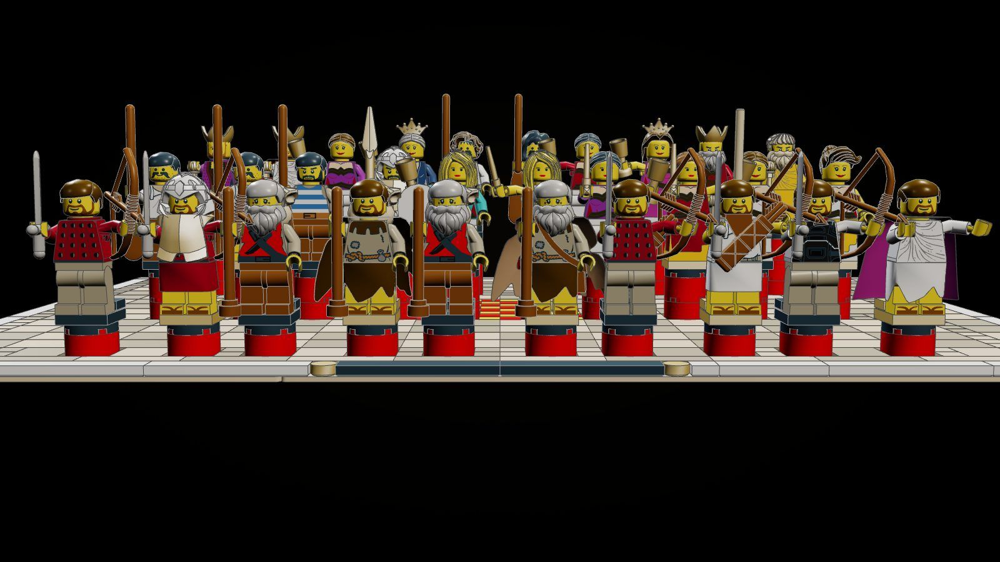
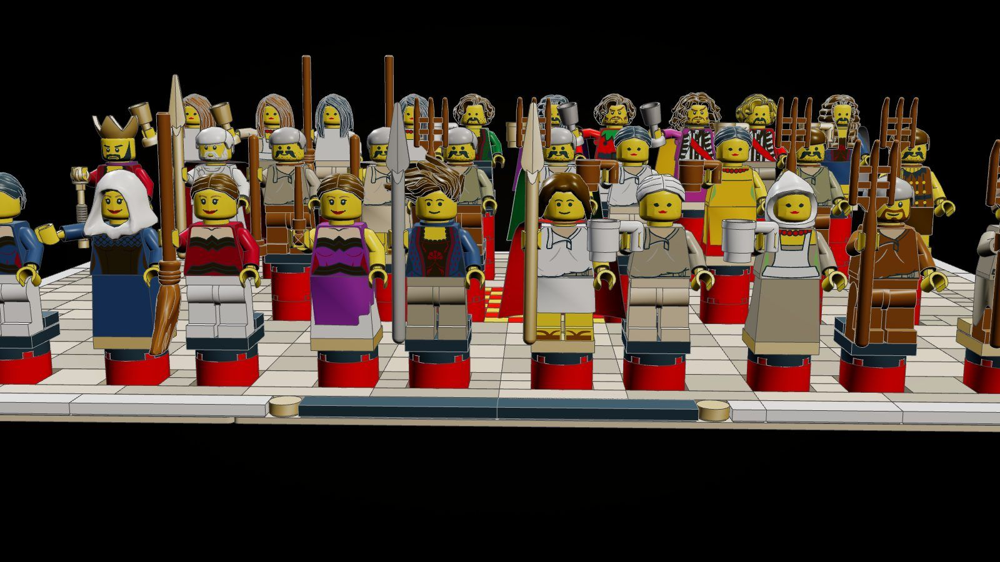
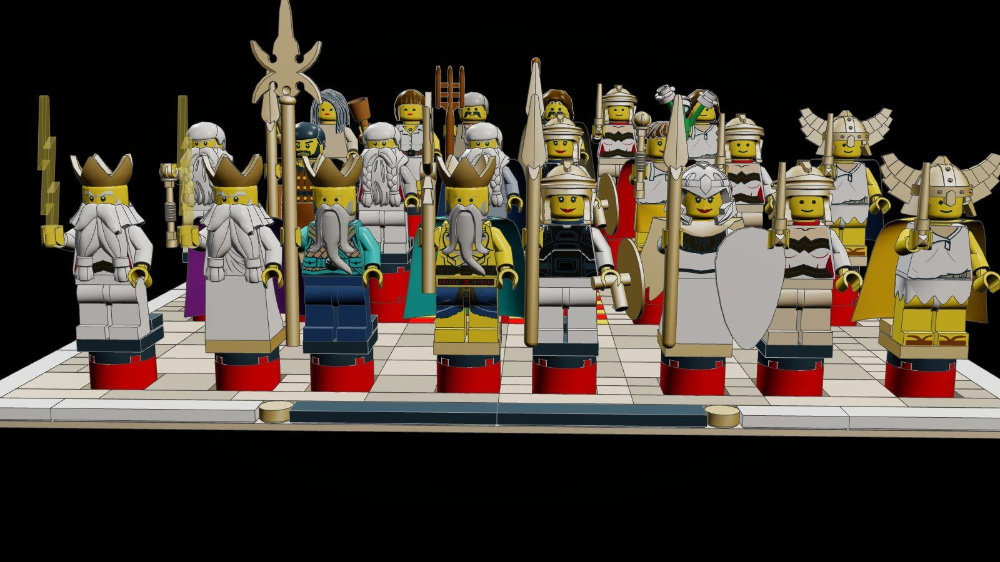
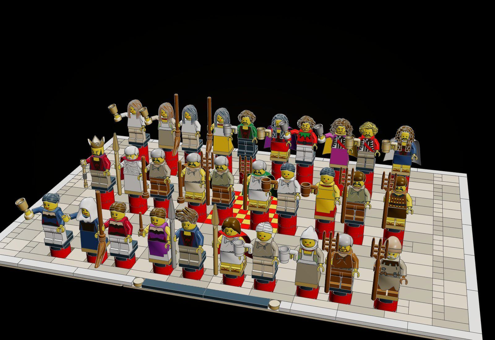
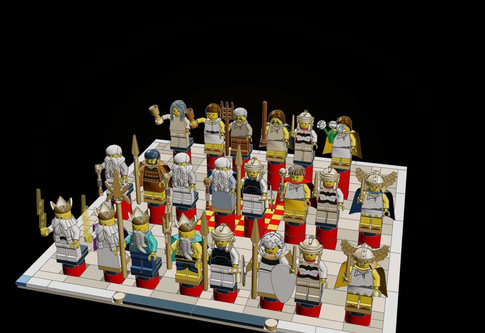

The Wardrobe
The cast of the Odyssey line as the film has them, each beside the same figure re-dressed from the Late Bronze Age evidence: the palace frescoes of Pylos, Mycenae and Tiryns, the Dendra panoply, the shaft-grave gold, and Homer's own descriptions of cloak, robe, veil, rags and arms.
"She threw about him a foul rag of a cloak and a tunic, tattered, filthy, black with smoke, and over them the great hide of a swift deer, worn bald; and she gave him a staff and a wretched wallet full of holes, with a twisted cord to hang it by." (Odyssey XIII 434-438, translated for this kit)

The object
The costume spec: tools/forage/product/wardrobe.py dress(card, sub, costume, x, yup, z, rot) places a cast figure exactly as kitlib.figure does and swaps what it wears and holds by role (gown, kilt, torso, cloak, helmet, held things), without touching the card; COSTUMES holds a spec for every principal.



How it is built
- Nothing in the cast is edited: dress() reads the card as kitlib.figure does and substitutes parts by role at placement, so the film and the other kits keep their figures.
- Women wear the court dress of the frescoes: a gown to the feet (36036) under a tiered flounce in a second colour (18200c01), an open gold-bordered or bead-necklace bodice; queens and old women the long robe and veil.
- Men wear the short kilt (600880c01) over bare legs printed with sandals (3816cpn4 / 3817cpn4); kings and elders the long robe pinned at one shoulder (973pmc) and a cloak (50231c01) in purple, red or saffron.
- Arms from the graves and the poem: the boar's-tusk helmet (60751 in white), the Dendra corslet (2587 in pearl gold), the figure-eight shield (2586), bronze spears; things new to a hand are set in its grip, learned from the cast's cards.
- Homer's costume objects: the beggar's rags, bald deer hide and pera on its cord; Laertes's gloves, leggings and goatskin cap; the purple cloak of the restored king; Hermes's winged cap and golden wand; the moly.
- Each line-up stands on Mycenaean columns (red round-brick shafts, black cushion, square abacus: black for the figure as cast, gold for the dressed) over a floor of painted squares with the hearth at its middle, framed and named.
The builds inside the build

Ithaca
15 pairs on 48 x 32: Penelope (twice), Telemachus, Eurycleia, Laertes (twice), Eumaeus, Philoetius, Melantho, Melanthius, two maids, Antinous, Eurymachus, Amphinomus.

The gods
11 pairs on 32 x 32: Zeus, Poseidon, Athena, Hermes; Athena as Mentes, Mentor, the herald, the pitcher girl, the shepherd; Hermes psychopomp and as a young man.
The voyage
15 pairs on 48 x 32: Odysseus's five guises, an oarsman and a fighting man, Calypso, Circe, Nausicaa, Alcinous, Arete, a Phaeacian, Helen, Menelaus.
What the checker says
| Build | File | Pieces | Loose | Clashes |
|---|---|---|---|---|
| Ithaca: the household and the suitors | set.wardrobe-ithaca | 836 | 0 | 0 |
| The Olympians and the guises of Athena | set.wardrobe-gods | 644 | 0 | 0 |
| Odysseus's guises, the crew, the nymphs, the Phaeacians, and Sparta | set.wardrobe-voyage | 861 | 0 | 0 |
Still to do
- Printed torsos cannot be matched to a Mycenaean bodice or corslet; the nearest prints stand in, and their printed colours do not change with the base colour (see COSTUMES.md, section 4).
- Several specs change a head or lay a beard piece over a printed beard where the card disagrees with the poem (Laertes, Menelaus, Athena as Mentes): those are new parts for those figures, not the card.
- Cloth parts in pearl gold (the aegis) and many of the chosen cloth colours were never produced as real elements.
- There is no figure-eight shield part and no golden sandal; 2586 and the reddish-brown sandal print stand in.
- Held things the cards place away from the hand (the bows of the Odysseus cards) are kept where the card has them; from the hero angle a bow of a figure as cast crosses in front of its dressed neighbour.
- Figures are not checked by the click checker: every figure stands with its feet on the two front studs of its abacus, and every gown (36036) is checked and clicks on its abacus.
- Not yet dressed: the ensembles in bulk (every suitor, every sailor), the shades of the dead, the Cyclopes and the monsters; and the tower shield (30166) is in the grip table but on no one.